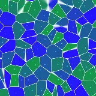
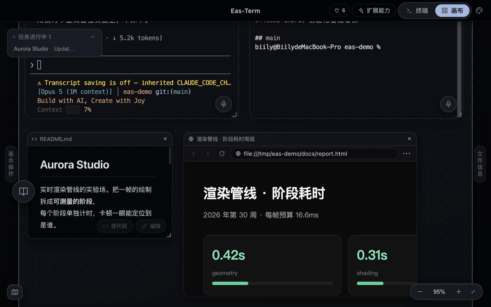
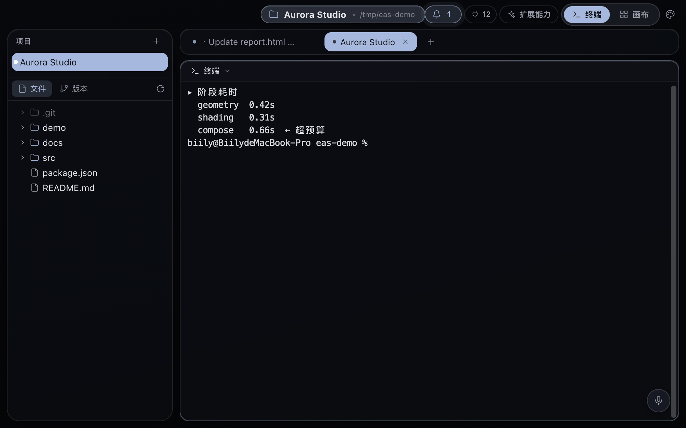
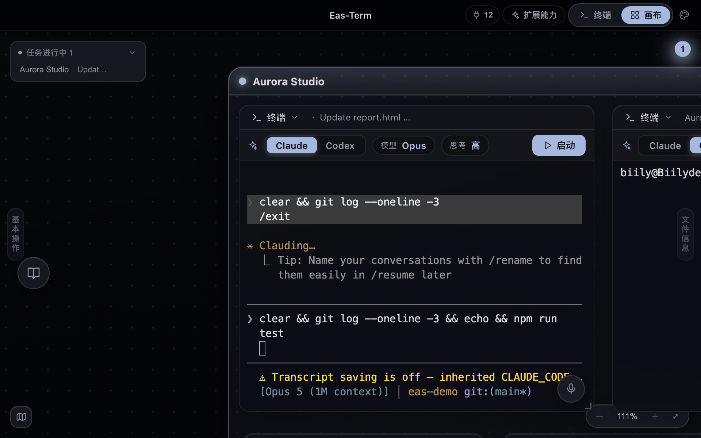
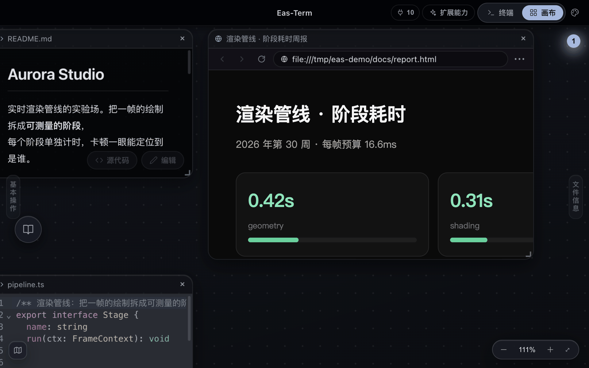
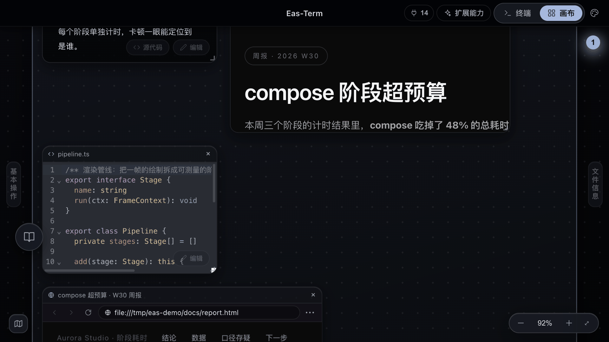

多终端 + 任意分屏
像编辑器那样横竖切分，每个项目一组标签。
智能 Agent 工作枢纽
请把 LLM 放到这里安家，我来帮你完成你的工作。
macOS 11+（Apple Silicon 与 Intel 通用）· Windows 10+（x64）

核心场景
终端里让 Claude Code 生成一个页面，产出的 HTML 会被开成画布上的预览节点，就摆在终端旁边。改一版看一版，不用在编辑器、浏览器、终端三个窗口之间找来找去。

像编辑器那样横竖分屏，几个终端并排跑。每个项目有自己的一组标签，切项目就是切一整套上下文，不用重新
cd 一遍。

任意终端节点一键起 Claude Code 或 Codex，模型和思考档位记得住。会话和终端是绑定的——回溯历史只会回溯这一个终端的，不会翻到别的终端的对话里去。

.md 文件默认渲染成排版好的样子，右下角一键切源码；所有文本预览都能就地编辑保存。Git
的提交历史、diff、回退，也都是画布上的模块。

能力清单
像编辑器那样横竖切分，每个项目一组标签。
终端、网页预览、代码、图片、设计稿都是画布上的模块，按项目分组成 Frame，可缩放平移。
每个终端节点一键起 Claude Code / Codex，记住模型和思考档位；会话与终端绑定，回溯不串台。
AI 能直接操控画布：把产出的 HTML 开成预览、整理布局、发完成通知。13 个工具，装上即用，不用配置。
终端里 CLI 打开的链接直接在画布里开，不跳出去。
说话转文字进终端，本地跑，不上传。
画布上直接做设计和动效，导出到项目的 demo/。
.md 默认渲染成排版，右下角切源码；所有文本预览都能就地编辑保存。
提交历史、diff、回退，都在画布模块里。
一个 markdown 文件夹，文件树 + 知识图谱都在左侧抽屉里。素材丢进收件箱，AI 按你定的规矩归档、写笔记、记账，Claude Code 和 Codex 都认。
侦查、施工、验收、写作……每个新会话绑一个角色，各自带自己的约定、模型和工具权限。角色可以排序、改分类、自己建。
242 个交互 / 动效 / UI 视觉术语，每条带示意图和实现思路，点一下把说明插进终端命令行。说不清想要什么效果的时候，在这儿找。
AI 接入
Eas-Term 自带一个 MCP 服务，装上应用就已经接好。终端里跑的 Claude Code 或 Codex 不只是给你回一段文本——它能直接把产出摆到你眼前。
共 13 个工具，随应用内置，不用手写配置文件。
